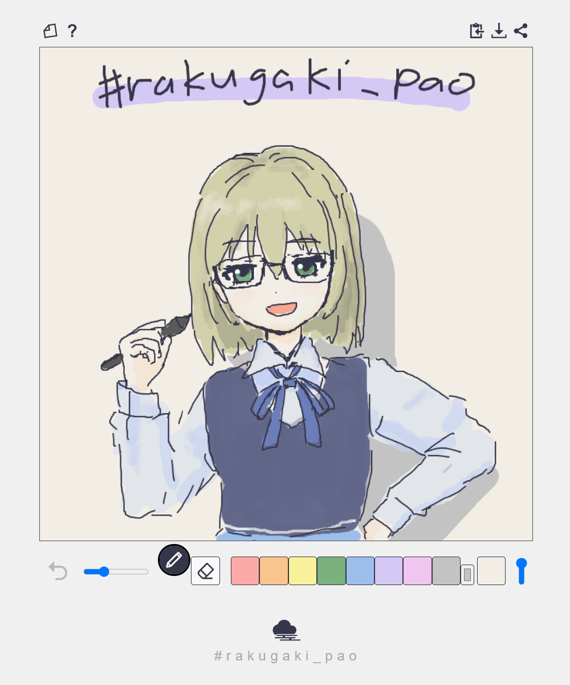

1分で線が消えるお絵かきアプリ
画面上で指やペンタブレットやマウスでお絵描きができますわ。下部のツールバーでペンと消しゴムを切り替えられましてよ。
描いた線は時間とともに以下のように色が変化し、1分後に消えてしまいます。
はかない線の色の変遷をお楽しみくださいませ。
描画の記録をタイムラプス動画（WebM形式）としてダウンロードできます。
描き始めると自動的に記録が始まりますわ。記録中は画面右上の赤い点が点滅しますの。
右上の保存ボタンを押すと動画の準備が始まります。
動画の準備には少し時間がかかりますの。準備中は点が青く点滅し、完了すると緑になり自動的にダウンロードが始まります。
クリアボタンを押すとリセットされて、またあらたな録画が始まります。すべての線が消えたときも同様にリセットされます。
画面下部のハッシュタグをクリックすると、タグがクリップボードにコピーされますわ。
ぜひハッシュタグをつけてシェアしてくださいね！
本アプリは、おえかきアプリ rakugaki_pao の姉妹版です。 
rakugaki_pao は、線画と色塗りに特化したシンプルなペイントアプリですわ。
よろしければこちらもお試しくださいませ。
なお、pao_vestige の利用規約は rakugaki_pao と同じものを適用いたします。
詳しくは rakugaki_pao について をご覧くださいまし。
こすふぃー @cosphi@mistodon.cloud
JCJK@クラウド女学院 / mistodon.cloud 管理人
連絡先:
mastodon(fedibird) /
Misskey /
𝕏